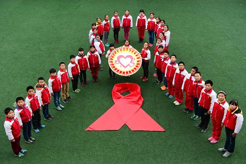
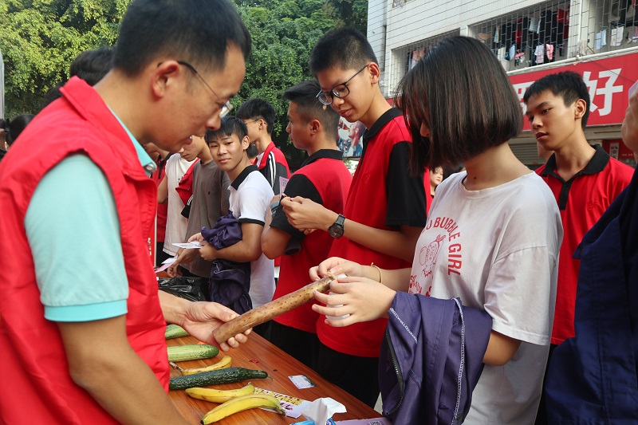

1、洁身自好是预防艾滋病的首要原则：杜绝口交、肛交等不洁性行为、特别是杜绝男男性行为、正确使用避孕套、遵守性道德是预防经性传播艾滋病的根本措施。
2、远离毒品、珍爱生命、绝不与他人共用注射器、在正规专科医院进行拔牙和美容、使用经过严格消毒的医疗器械或者正规厂家生产的一次性医疗器械，使用经过艾滋病病毒抗体检测的血液及血液制品等，是严防通过血液传播艾滋病的关键。
3、身患艾滋病的女性患者决不能因为自己的喜好坚持受孕，生下艾滋宝宝，让他们从一出生就来面对他们所难以承受的生命之痛。
在这个现实的社会，健康才是最重要的，我们只有有了健康，才有奋力拼搏的机会，只有有了健康，我们才有机会去拥有我们想要的东西，而在这个社会中，对我们的健康危害最大的，就是艾滋病，而且艾滋病还是一种传染病，稍不注意，就会被传染，一旦检测出感染了艾滋病，这辈子算是完了，虽然通过服用抗病毒药物可以控制它的病发，但是你的存在对这个社会来说，已经没有什么意义了。
认清形势，提高认识；坚定信心，明确目标；扩大宣传教育覆盖面，营造良好社会氛围；最大限度发现艾滋病病毒感染者；有效减少新生儿感染；减少艾滋病病毒传播几率；提高治疗水平和可及性；加强血液管理，保障临床用血安全；加强医疗保障，减轻艾滋病病毒感染者和病人医疗负担；加强关怀救助，提高艾滋病病毒感染者和病人生活质量。加强权益保护，促进社会和谐。加强组织领导，落实工作职责做好重点地区和综合防治示范区工作；加强防治队伍建设，提高工作积极性；加大科研力度，加强国际合作；多渠道筹集防治资金，提高资金使用效益；动员社会力量，促进广泛参与。
1 ) 普及宣传艾滋病的预防知识，了解传播途径和临床表现及预防方法； 2 ) 加强道德教育，禁止滥交，尤其与外籍人员性乱行为，取缔暗娼； 3 ) 避免与 HIV 感染者、艾滋病病人及高危人群发生性接触； 4 ) 禁止与静脉药隐者共用注射器、针头； 5 ) 使用进口血液，血液成份及血液制品时，必须进行 HIV 检测； 6 ) 国内供血者严格排选，应逐步做到检测 HIV 阴性方能供血，严防 HIV 传播； 7 ) 献血、献器官、组织及精液者应做 HIV 检测； 8 ) 建立艾滋病检测中心； 9 ) 提倡使用避孕套； 10 ) 艾滋病或 HIV 感染者应避免妊娠，出生婴儿应避免母乳喂养。 
 1、学校遵循“预防教育、宣传为主，严堵源头”的原则，成立艾滋病防治知识宣传教育领导小组，建立防控传染病应急预案，使学校对艾滋病等各类传染病的预防措施落实到位，责任到人，切实有效地开展传染病防控工作。 2、建立健全学校卫生管理组织网络。以学校领导、班主任、各班卫生委员等为主干组成三级管理网络体系，组织学习教育部、省、市、县教育行政主管部门和卫生行政主管部门下达的有关贯彻、落实《中国遏制与防治艾滋病行动计划》等文件，进行广泛动员宣传教育。 3、制定符合本校实际的防控艾滋病政策、制度及计划，使防控工作有序进行。 4、运用多形式、多渠道开展防控艾滋病教育。通过专题讲座、播放多媒体教学片；通过课堂教育如在体育与保健等各学科教育中有机渗透相关知识，使预防艾滋病健康教育工作做到经常化、多样化，并始终贯穿整个学校教育教学的全过程，反复强化，深入人心，并得到有效防控。 5、开展丰富多样的健康教育活动。如开展板块展览、问卷调查、主题班会、国旗下讲话等活动及广播专题宣传和橱窗宣传等形式，广泛开展预防艾滋病的有益健康教育活动，寓教于乐。 6、充分发挥学校共青团、学生会的协同作用，提高预防艾滋病健康教育的效果。将学校教育与家庭、社区教育有机结合，通过学生参与社区综合实践活动，把相关知识传递给家庭以及社区其他成员，从而促进社区预防艾滋病健康教育工作的开展。
关于我们